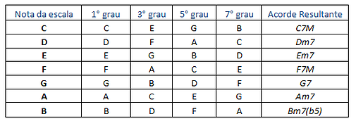

Campo harmônico é um conjunto de acordes formados a partir de uma determinada escala. Tome como exemplo a escala de dó maior: C, D, E, F, G, A, B.
Para cada nota dessa escala, iremos montar um acorde. Vamos ter, portanto, sete acordes, que serão os acordes do campo harmônico de dó maior.
Como faremos isso?
Para cada nota da escala, o acorde respectivo será formado utilizando o primeiro, o terceiro e o quinto graus (contados a partir dessa nota, em cima dessa mesma escala). Vamos começar com a nota C. O primeiro grau é o próprio C. O terceiro grau, contando a partir de C, é E. O quinto grau, contando a partir de C, é G.
O primeiro acorde do campo harmônico de dó maior é formado então pelas notas C, E, G (repare que esse é o acorde de dó maior, pois E é a terça maior de Dó).
Agora vamos montar o acorde da próxima nota da escala, que é D. O primeiro grau é o próprio D. O terceiro grau, contando a partir de D, nessa escala, é F. O quinto grau, contando a partir de D, é A. Portanto, o segundo acorde do nosso campo harmônico é formado pelas notas D, F e A (repare que esse é o acorde de Ré menor, pois a nota F é a terça menor de D).
Você deve estar percebendo até aqui que estamos montando os acordes do campo harmônico pensando nas tríades e utilizando somente as notas que aparecem na escala em questão (escala de dó maior).
Depois de montar a tríade, observamos se a terça de cada acorde ficou maior ou menor. Você pode também conferir a quinta de cada acorde, mas vai notar que ela sempre vai acabar sendo a quinta justa, exceto no último acorde, que vai ter a quinta bemol. É um bom exercício você tentar montar os acordes restantes desse campo harmônico. Confira depois com a tabela abaixo:
Muito bem, você acabou de aprender como se forma um campo harmônico. Mas para que isso serve afinal?
Bom, um campo harmônico serve para muitas coisas, e nesse momento vamos nos focar no ponto mais básico: ele serve para definir a tonalidade de uma música. Provavelmente você já deve ter ouvido a pergunta: “Em que tom está essa música?”. Pois bem, a tonalidade de uma música depende dos acordes presentes nessa música.
Se uma música contém os acordes do campo harmônico maior de dó, significa que a música está em dó maior. Com isso, sabemos que a escala a ser utilizada para fazer um solo, improvisar, criar riffs, etc. em cima da música é a escala de dó maior.
Portanto, conhecer os campos harmônicos tem uma grande utilidade: esse conhecimento permite que saibamos as notas que podemos usar para fazer arranjos em cima de uma determinada música. Conhecendo bem os desenhos das escalas, nada impede que possamos criar solos e arranjos automaticamente (habilidade conhecida como improviso).
Espero que isso tenha motivado você a continuar nosso estudo de campo harmônico, tendo visto a importância e utilidade desse conhecimento.
Já construímos um campo harmônico utilizando tríades, e agora vamos estender esse conceito para as tétrades.
A regra utilizada para montar os acordes, apenas recapitulando, foi pegar o primeiro, o terceiro e o quinto graus da escala em questão.
Faremos a mesma coisa agora, porém incluindo o sétimo grau, o que caracteriza uma tétrade. Teremos assim um campo harmônico igual ao anterior, porém formado por tétrades em vez de tríades.
Analisando a mesma escala de dó maior, começando pela nota dó, temos que o sétimo grau da escala, contando a partir de Dó, é Si. Os demais graus (terceiro e quinto) nós já vimos quais são. Portanto, o primeiro acorde desse campo harmônico será formado pelas notas C, E, G e B. Esse é o acorde de C7M, pois B é a sétima maior de Dó.
Aplicando a mesma regra para a próxima nota (D), veremos que o sétimo grau é C. Assim, o acorde será formado pelas notas D, F, A, C. Esse é o acorde de Dm7. Note que aqui temos a sétima menor de Ré, por isso o símbolo “7”, em vez de “7M” (que caracterizaria a sétima maior).
Montando a tabela completa, ficamos com:
Talvez você esteja se perguntando qual é a diferença, do ponto de vista prático, desses dois campos harmônicos que montamos.
Pois bem, a única diferença é que esse último contém uma nota a mais em cada acorde, deixando-os mais “cheios”. Do ponto de vista de improvisação, no que se refere a descobrir qual a tonalidade da música, nada se altera.
Veremos alguns exemplos desse assunto (descobrir a tonalidade da música) em breve. Antes, lembre que nós utilizamos como exemplo a escala maior de dó.
Agora, em vez de especificar a tonalidade (dó), vamos deixar um pouco mais genérico: “campo harmônico de uma escala maior”, pois se aplicarmos essa regra na escala maior de sol, na escala maior de lá, ou na escala maior de qualquer outra nota, sempre teremos uma coisa em comum. O campo harmônico maior de qualquer nota da escala vai seguir essa formação (onde os números romanos indicam os graus):
I7M IIm7 IIIm7 IV7M V7 VIm7 VIIm7(b5)
Você pode verificar isso montando o campo harmônico das demais tonalidades (além de Dó, que já fizemos).
Tome como exemplo a escala maior de Mi e o seu campo harmônico associado:
Note como o primeiro grau ficou maior com sétima, o segundo grau ficou menor com sétima, etc. Seguindo a formação que havia sido apresentada antes:
I7M IIm7 IIIm7 IV7M V7 VIm7 VIIm7(b5)
Isso facilita muito a nossa vida, pois significa que memorizando apenas essa sequência acima você já sabe o campo harmônico maior de qualquer nota. Basta colocar as notas respectivas da escala maior em questão no lugar dos graus.
Por exemplo: Qual o campo harmônico maior de Ré?
D7M Em7 F#m7 G7M A7 Bm7 C#m7(b5)
Obs: A escala maior de ré é: D, E, F#, G, A, B, C#.
Como exercício, tente montar o campo harmônico maior de todas as notas. Confira depois com a tabela abaixo:

Obs: para formar os campos harmônicos utilizando apenas 3 notas (tríade), basta retirar a sétima de todos os acordes dessa tabela, como fizemos na tabela abaixo. Deixaremos aqui a sétima apenas no último acorde, pois os acordes com quinta bemol raramente aparecem sem a sétima na prática: